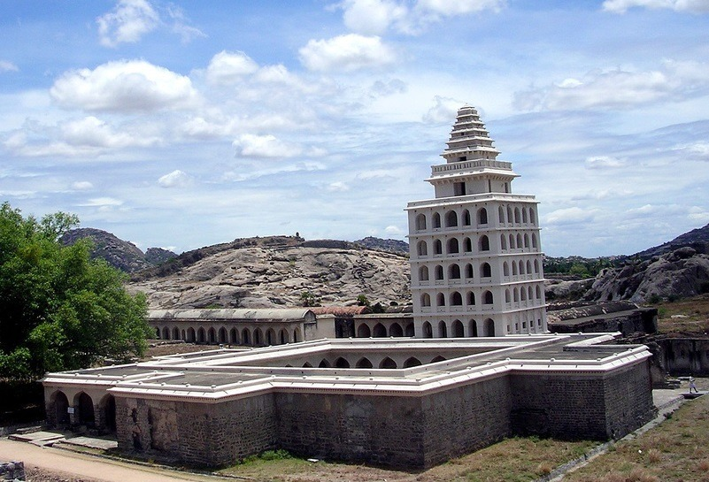
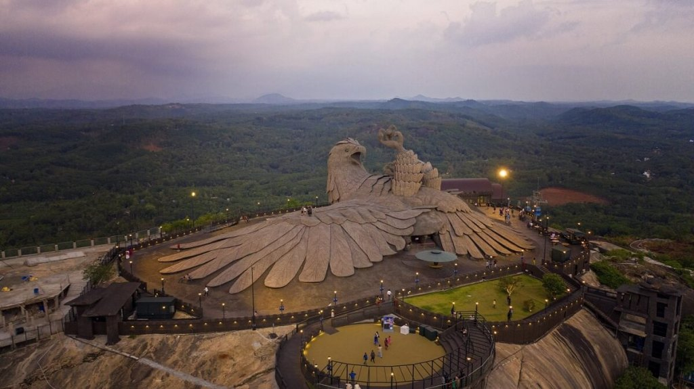
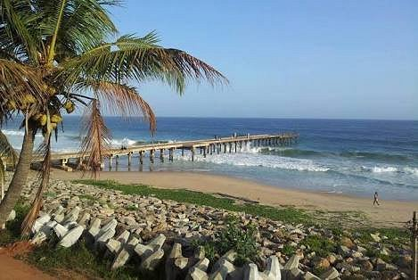
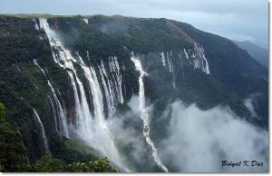
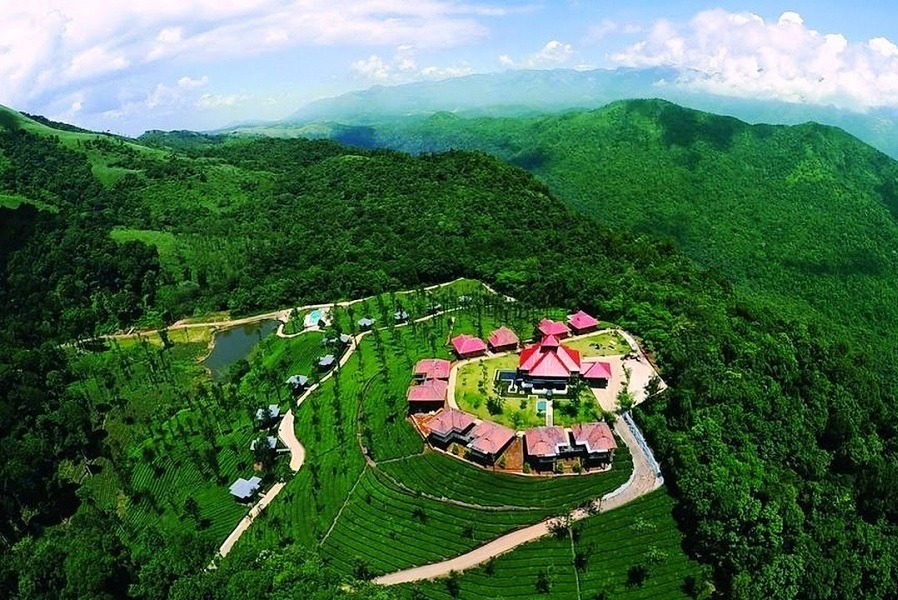
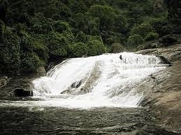
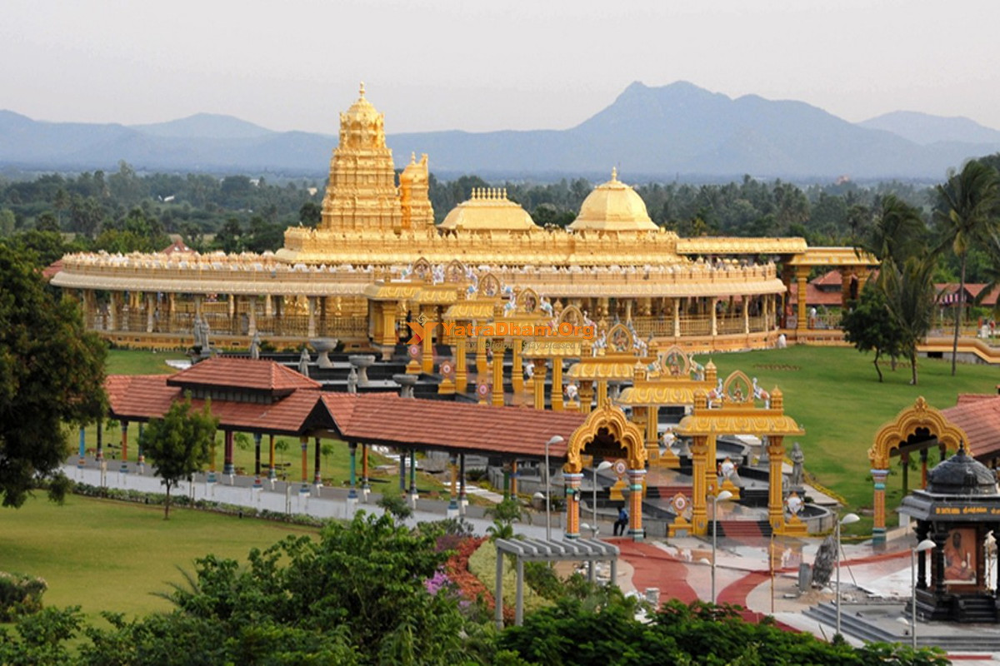
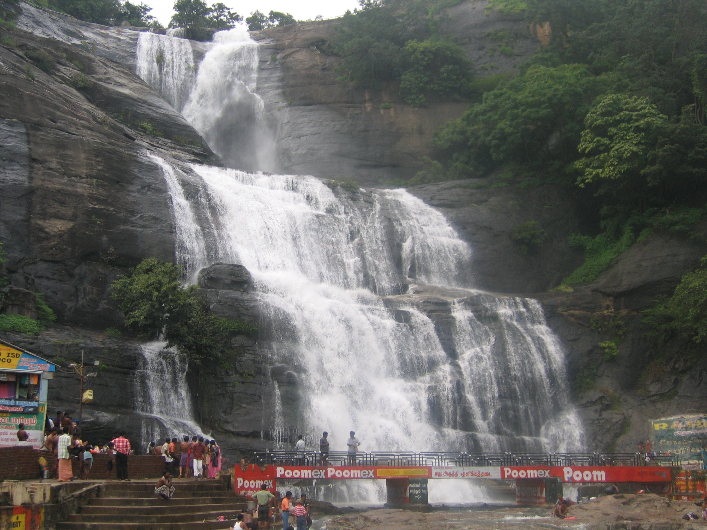

Kalakkad Mundanthurai Tiger Reserve (KMTR) is a significant protected area in Tamil Nadu,
India,
known for its rich
biodiversity and role as a major water source.
1. Location and Size:
KMTR is located in the southern Western Ghats, spanning the Ashambu Hills region, and
is part of the
Agasthyamalai
Biosphere Reserve. It covers a total area of 1,601.542 sq. km.
2. Biodiversity:
KMTR is a biodiversity hotspot, containing a wide variety of flora and fauna, including
several
endangered species. It
is home to tigers, leopards, elephants, and various primate
species like lion-tailed macaques and
Nilgiri langurs. The
reserve also boasts a high
number of endemic plant species.
3. River Sanctuary:
KMTR is known as a "River Sanctuary" due to the presence of 14 rivers originating from
the reserve.
These rivers are
crucial for providing water to the surrounding districts for
drinking and agriculture.
4. Tiger Conservation:
KMTR is one of the five tiger reserves in Tamil Nadu and is designated as a Type-1 Tiger
Conservation Unit (TCU). It
plays a vital role in tiger conservation efforts in the region.
5. Unique Ecosystems:
KMTR encompasses various ecosystems, from evergreen forests to dry deciduous forests
and even thorn
forests, making it a
unique and ecologically diverse area.

Gingee Fort, also known as Senji or Chenji Fort, is a significant historical site in Tamil Nadu, India,
notable for its
strategic location and architectural features.
1. Strategic Importance:
The fort is situated on three hillocks, making it a formidable defensive structure. It was considered
one of the most
impregnable fortresses in India, even by Shivaji Maharaj.
2. Architectural Marvel:
Gingee Fort showcases a blend of Indian, French, and Dutch architectural styles due to its history under
various rulers.
Notable structures include the Kalyana Mahal (marriage hall), granaries, prison cells, and temples.
3. Historical Significance:
The fort has been under the control of various dynasties, including the Cholas, Nayaks, Marathas,
Bijapur Sultans,
Mughals, and the British. It was also a major center of trade and administration.
4. UNESCO Nomination:
Gingee Fort has been nominated as a UNESCO World Heritage Site as part of the Maratha Military
Landscapes.
5. Key Structures:
The fort complex includes Rajagiri, Krishnagiri, and Chandrayan Durg hills, each with its own
fortifications and
structures. The Venkataramanaswami temple and the Anaikulam (Elephant Tank) are also noteworthy.

Jatayu Earth's Center in Kollam, Kerala, is a unique tourist destination known for its massive
sculpture of Jatayu, a
mythical bird from the Ramayana. The center offers a blend of mythology,
adventure, and nature, making it a popular
attraction.
1. World's Largest Bird Sculpture:
The center is home to the world's largest bird sculpture, a 200-foot long, 150-foot wide, and
70-foot high depiction of
Jatayu.
2. Mythological Significance:
The sculpture symbolizes Jatayu's attempt to rescue Sita from the demon king Ravana, as depicted
in the Ramayana.
3. Adventure Activities:
The center features various adventure activities, including rock climbing, rappelling, and ziplining.
4. Scenic Views and Nature Park:
Visitors can enjoy panoramic views of the surrounding landscape from the top of the hill
and explore the nature park
with walking trails.
5. Cable Car:
A cable car system provides convenient access to the top of the hill, offering a scenic ride.
6. Multi-Dimensional Theater:
Inside the giant bird sculpture, a multi-dimensional theater screens an audio-visual presentation
of the epic battle
between Jatayu and Ravana.

Thengapattinam Beach, located near Kanyakumari in Tamil Nadu, is a serene coastal destination known for
its unique
features and attractions. It's a popular spot for picnics and relaxation, offering a blend of natural
beauty and
cultural significance.
1. Tranquil Atmosphere:
The beach offers a peaceful and less crowded experience compared to other beaches in the region.
2. Coconut Groves:
The beach is famous for its abundant coconut trees, which line the shore and provide shade.
3. Ferry Services:
Ferry services are available at the beach, connecting it to nearby coastal villages.
4. Historical Significance:
The beach was once an important trading post for exporting dried coconut, dry fish, coir, and shark fin
to Arabia.
5. Old Mosque:
A 1500-year-old mosque is located in the vicinity of the beach, adding to its cultural importance.
6. Swimming:
The shallow waters near the shore are suitable for swimming.

Mawsynram, known as the "wettest place on Earth," is famous for its high rainfall and lush
landscapes, including
several
waterfalls. The most notable waterfalls are the Khreng Khreng
Waterfall, and others in the
surrounding area like the
Nohkalikai Falls near Cherrapunji, which is
a short distance away.
1. High Rainfall:
Mawsynram's location in the Khasi Hills and its proximity to the Bay of Bengal result in extremely
high rainfall,
making
it the wettest place on Earth.
2. Khreng Khreng Waterfall:
This waterfall is a popular attraction in Mawsynram, offering a picturesque sight with its
cascading
waters.
3. Other Waterfalls Nearby:
While Mawsynram itself has the Khreng Khreng waterfall, the nearby Cherrapunji also boasts
impressive waterfalls
like
the Nohkalikai Falls, which is a major tourist attraction.
4. Best Time to Visit:
The monsoon season (June to September) provides the fullest and most dramatic views of the
waterfalls, but the
post-monsoon period (October to April) offers a balance with less intense rainfall
and clearer skies
for better
visibility, according to StayVista.
5. Respectful Tourism:
When visiting Mawsynram and its waterfalls, it's important to respect the local culture and
environment, and to be
prepared for wet conditions with appropriate clothing and footwear, advises
Travelsetu.com.

Devala, a town in the Nilgiris district of Tamil Nadu, is known for its high rainfall, lush tea estates,
and proximity
to the Kerala border. It's a popular destination for nature lovers and those seeking adventure, with
attractions like
Mudumalai National Park, Pykara Lake, and various trekking trails. Devala also holds historical
significance, with
evidence of ancient settlements and Neolithic rock engravings.
1. High Rainfall:
Devala is recognized for receiving the highest rainfall in India, second only to Cherrapunji.
2. Proximity to Kerala Border:
It's located close to the Kerala-Tamil Nadu border, with Nilambur on the Kerala side.
3. Tourist Attractions:
Devala offers a range of attractions, including the Mudumalai Tiger Reserve Interpretation Centre,
Pykara Lake, and
various viewpoints.
4. Historical Significance:
Evidence suggests ancient human settlements and Neolithic rock engravings can be found in the area,
indicating a long
history of inhabitation.
5. Tea Estates:
Lush green tea estates surround the town, contributing to its scenic beauty and making it a popular
destination for
nature enthusiasts.

Vaideki Falls, located near Narasipuram, Coimbatore, is a scenic waterfall known for its lush
greenery and trekking
opportunities. Key points include its location within a forest requiring
permission and escort, the
moderate trek to
reach the falls, the potential for wildlife encounters
(especially elephants), and the opportunity
for activities like
trekking, picnicking, and immersing
in the cool water.
1. Location and Accessibility:
Vaideki Falls is situated near Narasipuram, about 35 km from Coimbatore. It's located within
a
forest area and requires
permission and an escort to enter.
2. Trekking and Nature:
The falls are reached via a 5 km trek through the forest, offering a chance to experience the
natural beauty of the
Western Ghats.
3. Wildlife and Safety:
The forest area around the falls is known for wildlife, including elephants, and visitors
should
exercise caution.
4. Activities:
Besides trekking, visitors can enjoy picnicking, immersing themselves in the waterfall's
cool water,
and
photography.
5. Scenic Beauty:
The falls are known for their picturesque locale, lush greenery, and stunning views, making
it a
popular spot for nature
lovers.
Nagore is a town in Tamil Nadu, India, known for its Dargah (shrine) dedicated to the Sufi saint Shahul
Hameed. Key
points about Nagore include its significance as a major Islamic pilgrimage site, the annual Kandhuri
festival, its
historical connection to the Nayak dynasty, and its unique blend of Hindu and Muslim cultures.
1. Nagore Dargah:
The town's most prominent feature is the Nagore Dargah, a revered Islamic shrine built over the tomb of
Shahul Hameed.
This Dargah is a significant pilgrimage site, attracting devotees from various faiths.
2. Kandhuri Festival:
Nagore is famous for its annual Kandhuri festival, a major event that draws large crowds to celebrate
the anniversary of
Shahul Hameed's death. The festival is a vibrant display of cultural and religious harmony.
3. Historical Significance:
The Dargah's history is intertwined with the Nayak dynasty of Thanjavur, with King Achuthappa Nayak
donating land for
the shrine after Shahul Hameed cured him.
4. Cultural Significance:
Nagore is a place where Hindu and Muslim communities coexist peacefully, with the Dargah serving as a
common ground for
both. This peaceful coexistence is a notable aspect of Nagore's identity.
5. Unique Foods and Sweets:
Nagore is known for its coastal region, which provides fresh fish and a variety of sweets, adding to the
town's unique
character. The town is also famous for its sweets.

The Sripuram Golden Temple, also known as the Sri Lakshmi Narayani Golden Temple,
is a significant
spiritual and
architectural landmark in Vellore, Tamil Nadu. It's known for its
stunning golden exterior,
intricate designs, and
spiritual atmosphere.
1. Golden Exterior:
The temple's most striking feature is its exterior, which is covered in gold foil, making it a radiant
and visually
impressive structure. Over 1,500 kilograms of gold were used in its construction.
2. Dedicated to Goddess Mahalakshmi:
The temple is dedicated to Goddess Mahalakshmi, the deity of wealth and prosperity.
Devotees visit
to seek blessings for
wealth, prosperity, and well-being.
3. Star-shaped Pathway (Sri Chakra):
A unique aspect of the temple is the star-shaped pathway, called the "Sri Chakra," that devotees
walk to reach the main
shrine. This path is believed to be a source of positive energy and spiritual
enlightenment.
4. Spiritual and Peaceful Atmosphere:
The temple complex, spread over 100 acres, offers a tranquil environment with lush green
gardens,
serene water bodies,
and well-maintained pathways, promoting a peaceful and meditative
experience.
5. Construction by Sri Narayani Peedam:
The temple was built by the Sri Narayani Peedam, a spiritual organization focused on promoting
peace, harmony, and
spirituality. The construction took place between 2001 and 2007.

Kutralam Falls, also known as Courtallam Falls, is a popular tourist destination in Tamil Nadu, India,
famous for its
nine waterfalls and medicinal properties.
1. Nine Waterfalls:
Kutralam boasts nine distinct waterfalls, including Main Falls, Five Falls, Old Courtallam Falls, and
Shenbaga Devi
Falls.
2. Medicinal Waters:
The water is believed to have medicinal properties due to its flow through forests and herbs.
3. "Spa of South India":
Kutralam is nicknamed the "Spa of South India" because of the perceived healing benefits of its
waters.
4. Main Falls:
The most prominent waterfall, also known as Peraruvi, is 60 meters high and has a 19-meter deep crater
that slows the
water flow for safe bathing.
5. Five Falls:
This cascade splits into five tributaries, offering a unique bathing experience.
6. Shenbaga Devi Falls:
Located uphill, this waterfall is reached by trekking and is near the Shenbagadevi temple.
7. Honey Falls:
Known for the beehives that form on the rock face, this falls is further away and requires a trek.
8. Temple Visits:
Kutralam is home to temples like the Courtallanathar temple near the Main Falls and the Shenbagadevi
Amman temple near
Shenbaga Devi Falls.